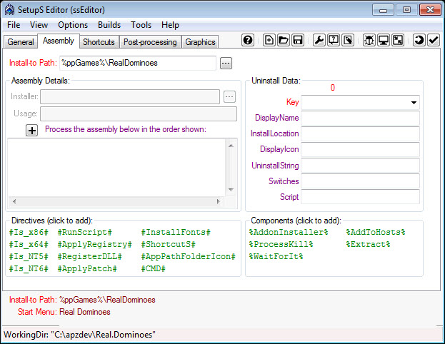
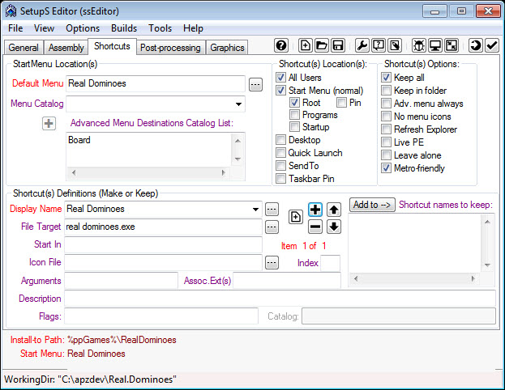
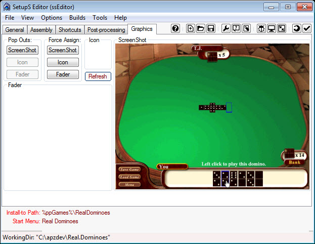
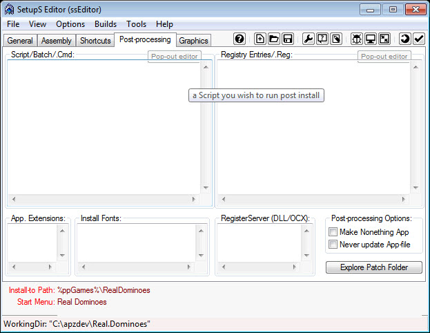

Creating a ppGame 


Creating a ppGame.
n
1. Preparation.
- Create a temporary "build" folder. Such as apzdev in the root of the drive c:\apzdev
- under this directory create a working folder of the app name.
- In this example create a folder Real.Dominoes C:\apzdev\Real.Dominoes
- Under this create a directory ppGame
- copy the game files to the directory C:\apzdev\Real.Dominoes\ppGame
- Right-click the C:\apzdev\Real.Dominoes folder and Sendto "SetupS Editor" this will open up the ssEditor.

- Ensure 'ppGame' is the "Build Type".
- Enter in the Title of the application in the Example "Real Dominoes"
- Click on tick box for Game this will change the text from Version to Year and change the categories to games
- Enter in the year of the application in the Example "2006"
- Enter in the URL of where the application can be located to enable users to find updates in the Example http://www.brothersoft.com/games/real-dominoes.html
- Enter in a description of the game, this information can be found at the URL or the help file of the game.
- Select the categories for the game, and click the "add" button for each one.
2. Assembly tab
- Check that the "Install-to Path" is correct.
- Type in %ppgame%\[gamepath] replace [gamepath] with the game name, with no spaces, in the example RealDominoes so the "Install-to Path" will have %ppGames%\RealDominoes

3. Shortcuts tab

- Default menu - Enter in the default group that will be used to store the shortcuts in the example 'Real Dominoes'
- Menu catalog - add in the catalog entries in the example 'Board'
- Shortcuts Definitions - Display name, type in a shorcut name in the example 'Real Dominoes'
- File target - select the file that will run in the example 'real dominoes.exe'
- Icon file - select the icon file that will be displayed with the shortcut
- Tip: some icon files can be extracted using the utility 'Extract Icons' found under the Tools Menu.
- Description - enter in a brief description of what the shortcut will do
4. Graphics tab
- Select the icon that will be shown in the game directory in the ppGames folder
- Select the fader graphic that is in PNG graphic format
- Select the screenshot that is in JPG graphic format

5. Post-processing tab
- Examine this to see if anything needs to be added.

6. Build
- IMPORTANT NOTE: This step is only available if building archive deployment packages (.apz/.pgz). Otherwise, the "Build" folder is complete for the ssWPI (folder) deployment package and no further action is required.
- Check your Build options. Click Menu "Builds" and select options for how the builds will be done.
- Finally, when ready, click "Tools, Build (F5)" -- or click the "Build" button on the Mini-Toolbar.

7. Test
- To test, simply double click on the .ppg or .pgz file created by ssEditor.
Copyright © 2020, Vergitek Solutions
ssTek Forum: Tools for custom Operating Systems!